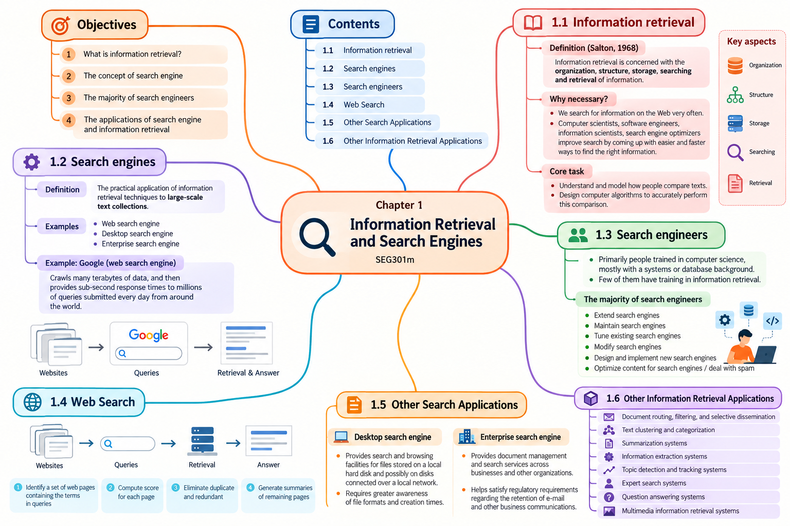

Tài liệu gốc: Slide bài giảng SEG301m Chương 1, "Information Retrieval and Search Engines" (24 slide)
Cách đọc: Mỗi mục có dòng "Slide nguồn" để chỉ rõ phần tương ứng trong bài giảng. Những đoạn mang nhãn "Giải thích thêm ngoài slide" hoặc "Ví dụ bổ sung ngoài slide" được thêm để người mới dễ theo dõi, không phải là nội dung được trích nguyên văn từ slide.
Mục tiêu của chương
Sau khi học xong chương này, bạn có thể:
- Giải thích truy xuất thông tin là gì và mối quan hệ giữa câu hỏi của người dùng với thông tin được tìm thấy.
- Giải thích cách công cụ tìm kiếm đưa các nguyên lý của truy xuất thông tin vào một dịch vụ thực tế.
- Mô tả công việc của kỹ sư tìm kiếm và luồng xử lý cơ bản của tìm kiếm Web.
- Nhận biết các loại tìm kiếm ngoài Web và những ứng dụng khác của truy xuất thông tin.
SLIDE NGUỒN 1-3

1.1 Truy xuất thông tin là gì
SLIDE NGUỒN 4-7
Vì sao cần truy xuất thông tin
Tìm kiếm trên Web là một hoạt động rất quen thuộc. Nhiều người tìm thông tin hằng ngày, thậm chí nhiều lần trong một giờ. Khi lượng thông tin quá lớn, chúng ta không thể đọc từng tài liệu để tìm thứ mình cần. Vì vậy, cần có những phương pháp giúp tìm đúng thông tin nhanh hơn và thuận tiện hơn.
Slide 4 nêu các nhóm thường giải quyết bài toán này, gồm nhà khoa học máy tính, kỹ sư phần mềm, chuyên gia khoa học thông tin và người làm tối ưu hóa công cụ tìm kiếm.
Định nghĩa truy xuất thông tin
Information retrievalTruy xuất thông tin là lĩnh vực nghiên cứu việc tổ chức, xây dựng cấu trúc, lưu trữ, tìm kiếm và lấy ra thông tin. Slide 6 trình bày định nghĩa của Salton (1968) qua năm hoạt động sau:
| Thuật ngữ trên slide | Nghĩa tiếng Việt | Hiểu đơn giản |
|---|---|---|
| Organization | Tổ chức | Sắp xếp thông tin để có thể quản lý và tìm lại. |
| Structure | Cấu trúc | Phân biệt các phần như tiêu đề, nội dung, tác giả hoặc ngày tạo. |
| Storage | Lưu trữ | Giữ thông tin trong hệ thống máy tính. |
| Searching | Tìm kiếm | Dùng truy vấn làm đầu mối để tìm trong tập thông tin. |
| Retrieval | Lấy ra | Chọn và trả về những thông tin có khả năng phù hợp. |
Hệ thống so sánh điều gì khi tìm kiếm
Từ hoặc câu hỏi mà người dùng nhập vào hệ thống được gọi là querytruy vấn. Đối tượng được tìm kiếm, chẳng hạn một bài viết hoặc trang Web, được gọi chung là documenttài liệu.
Slide 7 mô tả một "kho thông tin" rất lớn. Người dùng đặt truy vấn để tìm một phần thông tin quan trọng trong kho đó. Nhiệm vụ cốt lõi là hiểu và mô hình hóa cách con người so sánh các văn bản, sau đó thiết kế thuật toán để máy tính thực hiện phép so sánh này đủ chính xác.
Mức độ một tài liệu đáp ứng nhu cầu thông tin được gọi là relevanceđộ liên quan. Việc sắp xếp kết quả theo mức độ hữu ích dự đoán được gọi là rankingxếp hạng.
1.2 Công cụ tìm kiếm là gì
SLIDE NGUỒN 8-10
Slide 8 định nghĩa search enginecông cụ tìm kiếm là việc áp dụng các kỹ thuật truy xuất thông tin vào những tập văn bản có quy mô lớn. Các ví dụ trên slide gồm:
- công cụ tìm kiếm Web;
- công cụ tìm kiếm trên máy tính cá nhân;
- công cụ tìm kiếm trong doanh nghiệp.
Nói cách khác, truy xuất thông tin cung cấp các nguyên lý và mô hình để tìm thông tin, còn công cụ tìm kiếm biến chúng thành một hệ thống hoạt động thực tế.
Ví dụ về công cụ tìm kiếm Web
Slide 9 dùng Google làm ví dụ. Hệ thống phải thu thập trang Web bằng quá trình crawl, xử lý lượng dữ liệu rất lớn và phản hồi nhanh cho nhiều truy vấn từ khắp thế giới.
Các con số về dung lượng dữ liệu hoặc thời gian phản hồi trên slide phản ánh bối cảnh khi slide được soạn. Bài học này chỉ dùng chúng để minh họa yêu cầu về quy mô, không coi đó là số liệu hiện tại.
Luồng tổng quát gồm hai giai đoạn:
- Trước khi người dùng tìm kiếm, hệ thống thu thập và chuẩn bị các trang Web để có thể tra cứu.
- Khi người dùng gửi truy vấn, hệ thống tìm trong dữ liệu đã chuẩn bị và trả về kết quả.
Truy xuất thông tin và công cụ tìm kiếm tập trung vào điều gì
Slide 10 đặt các vấn đề của truy xuất thông tin bên cạnh các vấn đề khi xây dựng công cụ tìm kiếm:
| Truy xuất thông tin | Câu hỏi cần giải quyết | Công cụ tìm kiếm | Câu hỏi cần giải quyết |
|---|---|---|---|
| Độ liên quan và xếp hạng hiệu quả | Kết quả hữu ích có được đưa lên trước không? | Hiệu năng, tìm kiếm và lập chỉ mục hiệu quả | Hệ thống có xử lý nhanh ở quy mô lớn không? |
| Đánh giá | Có thể đo chất lượng kết quả bằng cách nào? | Đưa dữ liệu mới vào hệ thống | Trang hoặc tài liệu mới có được bổ sung không? |
| Nhu cầu thông tin và tương tác người dùng | Người dùng thật sự muốn biết gì và họ diễn đạt ra sao? | Độ bao phủ và độ mới | Hệ thống có đủ dữ liệu cần thiết và cập nhật kịp thời không? |
| Khả năng mở rộng | Dữ liệu và số người dùng tăng lên thì hệ thống còn hoạt động tốt không? | ||
| Khả năng thích nghi và vấn đề riêng của ứng dụng | Hệ thống có điều chỉnh theo từng mục đích và xử lý spam được không? |
1.3 Công việc của kỹ sư tìm kiếm
SLIDE NGUỒN 11-12
Slide 11 mô tả phần lớn kỹ sư tìm kiếm là những người được đào tạo về khoa học máy tính, thường có nền tảng về hệ thống hoặc cơ sở dữ liệu. Slide cũng nhận xét rằng chỉ một số ít trong nhóm này được đào tạo chuyên sâu về truy xuất thông tin.
Đây là nhận định trong slide nguồn, không phải kết quả khảo sát hiện tại về toàn bộ thị trường lao động.
Slide 12 liệt kê các công việc chính:
| Công việc | Nội dung |
|---|---|
| Mở rộng công cụ tìm kiếm | Bổ sung chức năng hoặc khả năng mới. |
| Duy trì công cụ tìm kiếm | Giữ dịch vụ ổn định và xử lý sự cố vận hành. |
| Tinh chỉnh công cụ tìm kiếm hiện có | Cải thiện chất lượng kết quả hoặc hiệu năng. |
| Sửa đổi công cụ tìm kiếm | Điều chỉnh hệ thống cho yêu cầu hoặc môi trường mới. |
| Thiết kế và triển khai công cụ tìm kiếm mới | Xây dựng một hệ thống mới từ kiến trúc đến phần mềm. |
| Tối ưu nội dung và xử lý spam | Giúp nội dung có thể được tìm thấy đúng cách và chống hành vi thao túng kết quả. |
1.4 Luồng tìm kiếm Web
SLIDE NGUỒN 9, 13
Slide 13 minh họa quá trình từ lúc người dùng nhập truy vấn đến lúc nhận kết quả:
- Xác định một tập trang Web có chứa các từ trong truy vấn.
- Tính scoređiểm cho từng trang.
- Loại bỏ các trang trùng lặp hoặc dư thừa.
- Tạo phần mô tả ngắn cho các trang còn lại và hiển thị kết quả.
Điểm số giúp hệ thống quyết định trang nào nên đứng trước. Bước loại trùng giúp cùng một nội dung không xuất hiện nhiều lần. Phần mô tả ngắn giúp người dùng đánh giá nhanh một kết quả trước khi mở trang.
1.5 Tìm kiếm ngoài Web
SLIDE NGUỒN 14
Tìm kiếm trên máy tính cá nhân
Công cụ tìm kiếm trên máy tính cá nhân (desktop search engine) cung cấp khả năng tìm và duyệt các tệp trên ổ đĩa cục bộ, đôi khi gồm cả các ổ đĩa trong mạng nội bộ. Hệ thống phải hiểu nhiều định dạng tệp và các thuộc tính như thời gian tạo.
Tìm kiếm trong doanh nghiệp
Công cụ tìm kiếm doanh nghiệp (enterprise search engine) cung cấp dịch vụ quản lý và tìm kiếm tài liệu trong doanh nghiệp hoặc tổ chức. Theo slide, hệ thống này còn có thể hỗ trợ yêu cầu tuân thủ, chẳng hạn lưu giữ email và các trao đổi công việc trong thời gian quy định.
Web search, desktop search và enterprise search cùng dùng nguyên lý truy xuất thông tin, nhưng khác nhau về phạm vi dữ liệu, quyền truy cập, định dạng tài liệu và yêu cầu vận hành.
1.6 Các ứng dụng khác của truy xuất thông tin
SLIDE NGUỒN 15-22
Slide 15 liệt kê tám nhóm ứng dụng của truy xuất thông tin.
1. Định tuyến, lọc và phân phối tài liệu có chọn lọc
SLIDE NGUỒN 15-16
Hệ thống xem xét nội dung tài liệu để chuyển tài liệu đến đúng nhóm người dùng, hoặc loại những tài liệu không phù hợp. Selective disseminationPhân phối có chọn lọc nghĩa là chỉ đưa thông tin đến những người có mối quan tâm tương ứng.
Slide 16 dùng một bài viết về Việt Nam và Hàn Quốc. Hệ thống chọn nhóm "politics" thay vì "business" hoặc "lifestyle", sau đó chuyển bài viết cho những người đăng ký nhóm đó.
2. Phân cụm và phân loại văn bản
SLIDE NGUỒN 15, 17
ClusteringPhân cụm gom các tài liệu giống nhau thành nhóm dựa trên dữ liệu. ClassificationPhân loại đưa tài liệu vào các nhóm đã được xác định trước.
Slide 17 cho thấy các mẫu thuộc ba nhóm politics, business và lifestyle. Một bài viết mới về Việt Nam và Hàn Quốc được hệ thống đưa vào nhóm politics.
3. Tóm tắt văn bản
SLIDE NGUỒN 15, 18
Hệ thống tóm tắt (summarization system) rút gọn tài liệu thành một số đoạn, câu hoặc cụm từ quan trọng mô tả nội dung. Slide 18 minh họa một bài báo dài được rút thành câu ngắn nói về việc khuyến khích sáng tạo để tạo cơ hội cho người trẻ.
4. Trích xuất thông tin
SLIDE NGUỒN 15, 19
Information extractionTrích xuất thông tin nhận diện các thực thể có tên, chẳng hạn địa điểm và ngày tháng, rồi kết hợp chúng thành bản ghi có cấu trúc mô tả quan hệ giữa các thực thể.
5. Phát hiện và theo dõi chủ đề
SLIDE NGUỒN 15, 20
Topic detection and trackingPhát hiện và theo dõi chủ đề tìm các sự kiện trong dòng tin tức hoặc nguồn thông tin liên tục, sau đó theo dõi sự kiện khi nó thay đổi theo thời gian.
6. Tìm kiếm chuyên gia
SLIDE NGUỒN 15, 21
Expert searchTìm kiếm chuyên gia xác định thành viên trong một tổ chức có chuyên môn về một lĩnh vực cụ thể. Kết quả cần tìm ở đây là con người, không chỉ là tài liệu.
7. Hệ thống hỏi đáp
SLIDE NGUỒN 15, 22
Hệ thống hỏi đáp (question answering system) tích hợp thông tin từ nhiều nguồn để đưa ra câu trả lời ngắn gọn cho một câu hỏi cụ thể.
8. Truy xuất thông tin đa phương tiện
SLIDE NGUỒN 15
Multimedia information retrievalTruy xuất thông tin đa phương tiện tìm kiếm trên ảnh, âm thanh, video và các dạng dữ liệu khác ngoài văn bản. Slide 15 chỉ nêu tên ứng dụng này, không cung cấp một slide diễn giải riêng.
Kết nối các ứng dụng trong một quy trình
Phần này là diễn giải bổ sung để liên kết các ứng dụng trên.
Bài tập cuối chương
SLIDE NGUỒN 23
Yêu cầu trên slide:
Dùng Web để tìm càng nhiều ví dụ càng tốt về công cụ tìm kiếm mã nguồn mở, hệ thống truy xuất thông tin hoặc công nghệ liên quan. Viết mô tả ngắn cho từng hệ thống, sau đó tổng hợp điểm giống và khác nhau.
Bạn có thể trình bày kết quả theo bảng sau:
| Nội dung cần tìm | Câu hỏi gợi ý |
|---|---|
| Tên và trang chính thức | Dự án tên gì? Nguồn thông tin chính thức ở đâu? |
| Mục đích chính | Hệ thống dùng để tìm trên Web, trong doanh nghiệp hay trong một ứng dụng? |
| Loại dữ liệu | Hệ thống tìm văn bản, tệp, ảnh hay loại dữ liệu nào khác? |
| Điểm giống nhau | Các hệ thống có chung mục tiêu hoặc thành phần nào? |
| Điểm khác nhau | Chúng khác nhau về dữ liệu, cách triển khai hoặc trường hợp sử dụng nào? |
Tổng kết
SLIDE NGUỒN 24, đồng thời ôn lại slide 1-23
- Truy xuất thông tin nghiên cứu cách tổ chức, lưu trữ, tìm kiếm và lấy ra thông tin phù hợp với nhu cầu.
- Công cụ tìm kiếm là ứng dụng thực tế của kỹ thuật truy xuất thông tin trên tập văn bản quy mô lớn.
- Tìm kiếm Web gồm việc xác định trang ứng viên, tính điểm, loại trùng và tạo mô tả ngắn cho kết quả.
- Các kỹ thuật truy xuất thông tin còn được dùng cho định tuyến tài liệu, phân loại, phân cụm, tóm tắt, trích xuất thông tin, theo dõi chủ đề, tìm chuyên gia, hỏi đáp và tìm kiếm đa phương tiện.
Câu hỏi tự kiểm tra
- Query và document lần lượt chỉ điều gì?
- Vì sao có cùng từ với truy vấn chưa chắc đồng nghĩa với liên quan?
- Truy xuất thông tin và công cụ tìm kiếm có quan hệ như thế nào?
- Crawl khác việc xử lý truy vấn của người dùng ở thời điểm nào?
- Trong luồng tìm kiếm Web, bước nào xử lý hai URL có nội dung giống nhau?
- Phân cụm khác phân loại ở điểm nào?
- Kỹ thuật nào phù hợp để gom các bản tin cập nhật về cùng một sự kiện?
- Desktop search và enterprise search tìm dữ liệu ở đâu?
Xem đáp án gợi ý
- Query là từ, câu hỏi hoặc điều kiện người dùng gửi vào hệ thống. Document là đối tượng được tìm kiếm, chẳng hạn bài viết hoặc trang Web.
- Một từ có thể xuất hiện trong nhiều ngữ cảnh khác nhau. Độ liên quan phụ thuộc vào nhu cầu thông tin chứ không chỉ phụ thuộc vào việc trùng từ.
- Truy xuất thông tin cung cấp nguyên lý và mô hình; công cụ tìm kiếm áp dụng chúng vào hệ thống thực tế.
- Crawl thu thập dữ liệu trước hoặc theo lịch. Xử lý truy vấn diễn ra khi người dùng gửi yêu cầu tìm kiếm.
- Bước loại bỏ trang trùng lặp hoặc dư thừa.
- Phân cụm tìm nhóm từ dữ liệu chưa có nhãn; phân loại đưa tài liệu vào các nhóm đã định nghĩa.
- Phát hiện và theo dõi chủ đề.
- Desktop search tìm trên máy cá nhân hoặc mạng nội bộ; enterprise search tìm trong kho tài liệu của tổ chức.
Bảng thuật ngữ
| English | Tiếng Việt | Giải thích ngắn | Slide nguồn |
|---|---|---|---|
| Information Retrieval (IR) | Truy xuất thông tin | Lĩnh vực tìm và lấy ra thông tin hữu ích cho một nhu cầu. | 4-7 |
| Search engine | Công cụ tìm kiếm | Hệ thống áp dụng kỹ thuật IR trên tập dữ liệu lớn. | 8-10 |
| Information need | Nhu cầu thông tin | Điều người dùng thật sự muốn biết. | 7, 10 |
| Query | Truy vấn | Từ, câu hỏi hoặc điều kiện gửi vào hệ thống. | 7, 9, 13 |
| Document | Tài liệu | Đối tượng được tìm kiếm, không chỉ giới hạn ở tài liệu giấy. | 7, 14-19 |
| Relevance | Độ liên quan | Mức độ tài liệu đáp ứng nhu cầu thông tin. | 10 |
| Ranking | Xếp hạng | Sắp kết quả theo mức độ hữu ích dự đoán. | 10, 13 |
| Score | Điểm | Giá trị dùng để quyết định thứ tự kết quả. | 13 |
| Crawl | Thu thập Web / crawl | Quá trình lấy các trang Web về hệ thống. | 9 |
| Indexing | Lập chỉ mục | Chuẩn bị cấu trúc dữ liệu để tìm nhanh. | 10 |
| Coverage | Độ bao phủ | Mức độ hệ thống thu thập đủ phạm vi dữ liệu cần thiết. | 10 |
| Freshness | Độ mới | Mức độ dữ liệu phản ánh các cập nhật gần đây. | 10 |
| Scalability | Khả năng mở rộng | Khả năng tiếp tục hoạt động khi dữ liệu hoặc người dùng tăng. | 10 |
| Spam | Spam | Nội dung hoặc hành vi cố tình thao túng chất lượng kết quả. | 10, 12 |
| Desktop search | Tìm kiếm trên máy tính cá nhân | Tìm tệp trên máy hoặc mạng nội bộ. | 14 |
| Enterprise search | Tìm kiếm doanh nghiệp | Tìm trong tài liệu và dữ liệu của tổ chức. | 14 |
| Document filtering | Lọc tài liệu | Chọn hoặc loại tài liệu theo hồ sơ và điều kiện. | 15-16 |
| Selective dissemination | Phân phối có chọn lọc | Gửi thông tin đến người có mối quan tâm phù hợp. | 15-16 |
| Clustering | Phân cụm | Gom các đối tượng giống nhau thành nhóm từ dữ liệu. | 15, 17 |
| Categorization / Classification | Phân loại | Đưa đối tượng vào nhóm đã xác định trước. | 15, 17 |
| Summarization | Tóm tắt | Rút gọn tài liệu nhưng giữ nội dung chính. | 15, 18 |
| Information extraction | Trích xuất thông tin | Lấy thực thể và quan hệ từ văn bản thành dữ liệu có cấu trúc. | 15, 19 |
| Topic detection and tracking | Phát hiện và theo dõi chủ đề | Tìm sự kiện trong dòng tin và theo dõi diễn biến. | 15, 20 |
| Expert search | Tìm kiếm chuyên gia | Tìm người có chuyên môn trong một lĩnh vực. | 15, 21 |
| Question answering | Hỏi đáp | Trả lời trực tiếp một câu hỏi dựa trên nguồn thông tin. | 15, 22 |
| Multimedia information retrieval | Truy xuất thông tin đa phương tiện | Tìm kiếm ảnh, âm thanh, video và dữ liệu đa phương tiện. | 15 |